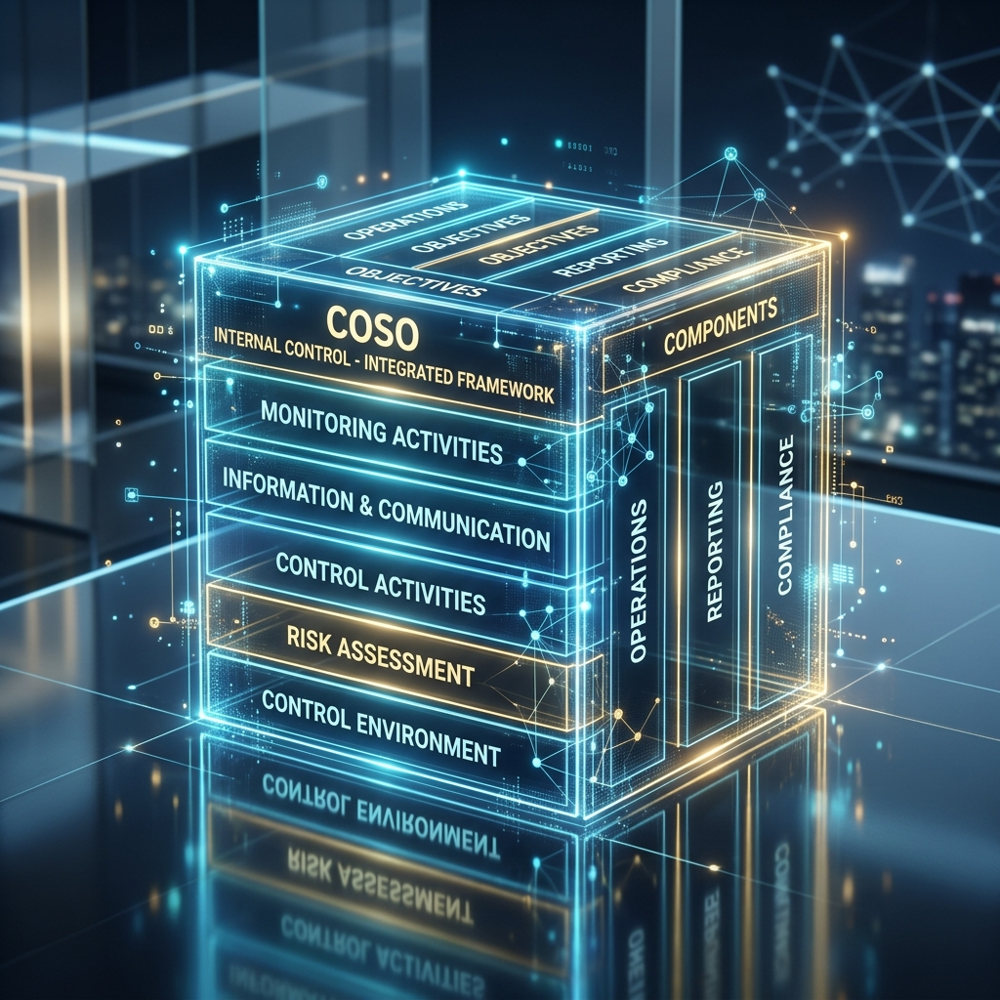

บริษัท ยูเนี่ยน ปิโตรเคมีคอล จำกัด (มหาชน) หรือ “บริษัทฯ” ได้ดำเนินงานด้านการควบคุมภายในตามมาตรฐานสากล COSO (Committee of Sponsoring Organizations of the Treadway Commission) เพื่อให้บริษัทฯ บรรลุวัตถุประสงค์ทั้ง 3 ด้าน ได้แก่ ด้านการดำเนินงาน (Operation) ด้านการรายงาน (Reporting) และด้านการปฏิบัติตามกฎหมาย ระเบียบ ข้อบังคับที่เกี่ยวข้องกับการดำเนินธุรกิจของบริษัทฯ (Compliance)
โดยฝ่ายบริหารและหน่วยงานตรวจสอบภายในของบริษัทฯ ได้จัดทำแบบประเมินการควบคุมภายในประจำปี ตามหลักเกณฑ์ที่สำนักงานคณะกรรมการกำกับหลักทรัพย์และตลาดหลักทรัพย์ (ก.ล.ต.) กำหนด ซึ่งแบบประเมินความเพียงพอของระบบการควบคุมภายในของบริษัทฯ ได้ผ่านการสอบทานและให้ความเห็น ข้อเสนอแนะ โดยคณะกรรมการตรวจสอบ และรายงานต่อคณะกรรมการบริษัทพิจารณา ในการประชุมครั้งที่ 1/2568 เมื่อวันที่ 26 กุมภาพันธ์ 2568 คณะกรรมการบริษัท เห็นว่า ระบบการควบคุมภายในของบริษัทฯ มีความเพียงพอและเหมาะสม ไม่พบข้อบกพร่องที่สำคัญที่อาจกระทบต่อระบบการควบคุมภายในของบริษัทฯ รายงานแบบประเมินความเพียงพอของระบบการควบคุมภายในมีการจัดทำเอกสารอ้างอิงการตอบแบบประเมินที่ชัดเจน ครบถ้วน ถูกต้อง เชื่อถือได้ และการดำเนินธุรกิจเป็นไปตามกฎหมายและระเบียบข้อบังคับที่เกี่ยวข้อง

บริษัทฯ มีหน่วยงานที่รับผิดชอบเกี่ยวกับงานควบคุมภายในและกำหนดให้ระบบการควบคุมภายในเข้าไปอยู่ในทุกกิจกรรม ทุกฝ่าย และทุกระดับในบริษัทฯ เพื่อมุ่งเน้นให้มีระบบการควบคุมภายในที่เพียงพอและเหมาะสมกับการดำเนินธุรกิจ ซึ่งในปี 2568 บริษัทฯ ได้มีการดำเนินการเพื่อเพิ่มประสิทธิภาพระบบการควบคุมภายใน และสรุปผลการดำเนินงานตามองค์ประกอบ 5 ด้าน ดังนี้
1. การควบคุมภายในองค์กร (Control Environment)
คณะกรรมการบริษัท และผู้บริหาร มุ่งเน้นให้บุคลากรมีความรู้ ความสามารถ ซึ่งจะช่วยให้การดำเนินธุรกิจขององค์กรเติบโตอย่างยั่งยืน จึงได้กำหนดให้มีจรรยาบรรณธุรกิจ และการกำกับดูแลการดำเนินธุรกิจของบริษัทฯ เพื่อให้บริษัทฯ มีระบบการควบคุมภายในองค์กรที่ดีและเหมาะสม ดังนี้
- นโยบายและจรรยาบรรณ: กำหนดนโยบายการกำกับดูแลกิจการที่ดี นโยบายต่อต้านการทุจริตคอร์รัปชั่น ข้อกำหนดเกี่ยวกับจรรยาบรรณธุรกิจ ระเบียบปฏิบัติ ข้อบังคับทางวินัย และมีการติดตามผลการปฏิบัติตามเป็นประจำทุกปี พร้อมสื่อสารให้กรรมการ ผู้บริหาร และพนักงาน ยึดถือและปฏิบัติ
- ความเป็นอิสระของคณะกรรมการ: คณะกรรมการบริษัท มีความเป็นอิสระจากฝ่ายบริหาร มีการกำหนดขอบเขต อำนาจหน้าที่ชัดเจน ทำหน้าที่กำกับดูแลโดยรวม ให้ความเห็นต่อทิศทางกลยุทธ์ และติดตามผลดำเนินงานอย่างสม่ำเสมอ
- โครงสร้างองค์กร: กำหนดโครงสร้างองค์กรและสายการปฏิบัติงาน เพื่อให้การบริหารจัดการมีประสิทธิภาพ มีการแบ่งแยกหน้าที่ในส่วนงานที่สำคัญ กำหนดอำนาจอนุมัติ เพื่อให้เกิดการถ่วงดุลอำนาจ รวมถึงมีแผนพัฒนาบุคลากร สรรหาผู้สืบทอดตำแหน่ง (Succession Plan) และประเมินผลปฏิบัติงานอย่างเป็นระบบ
2. การประเมินความเสี่ยง (Risk Assessment)
คณะกรรมการบริษัท และผู้บริหารให้ความสำคัญในการบริหารจัดการความเสี่ยง เพื่อให้บรรลุเป้าหมายที่กำหนดไว้และนำพาบริษัทฯ ไปสู่การเติบโตอย่างยั่งยืน โดยจัดตั้ง คณะกรรมการบริหารความเสี่ยง (Risk Management Committee) จำนวน 4 ท่าน เพื่อกำกับดูแลการบริหารความเสี่ยงให้เป็นไปอย่างเหมาะสมและสอดคล้องกับกลยุทธ์
- กรอบการบริหารความเสี่ยง (ERM): วิเคราะห์ความเสี่ยง ประเมิน ติดตาม และจัดทำแผนบริหารจัดการความเสี่ยง ทั้งระดับองค์กร (Corporate Risk) ระดับปฏิบัติการ (Operation Risk) และความเสี่ยงโครงการ (Projects Risk) โดยพิจารณาโอกาสเกิดการทุจริตคอร์รัปชั่นด้วย
- การติดตามและรายงาน: ผู้รับผิดชอบความเสี่ยงจะกำหนดตัวชี้วัด (KPIs) และรายงานสรุปผลประจำเดือนต่อคณะกรรมการบริหาร และรายงานระดับองค์กรต่อคณะกรรมการบริษัทในทุกไตรมาส เพื่อประเมินความเสี่ยงคงเหลือให้อยู่ในระดับที่ยอมรับได้
- แผนรองรับภาวะวิกฤต: พัฒนาระบบการบริหารความเสี่ยงเพื่อรองรับและบริหารจัดการเมื่อเผชิญเหตุฉุกเฉิน ทำให้การดำเนินธุรกิจเป็นไปอย่างต่อเนื่อง (BCP) ลดผลกระทบและรักษาภาพลักษณ์องค์กร
3. การควบคุมการปฏิบัติงาน (Control Activities)
บริษัทฯ ได้กำหนดกิจกรรมการควบคุมที่มีประสิทธิภาพ เพื่อช่วยลดความเสี่ยงให้อยู่ในระดับที่ยอมรับได้ มีการจัดทำระเบียบปฏิบัติ นโยบาย คู่มือและขั้นตอนปฏิบัติงานที่เป็นลายลักษณ์อักษร
- การกำหนดขอบเขตอำนาจ: กระจายอำนาจอนุมัติ มีการแบ่งแยกหน้าที่ มีนโยบายเกี่ยวกับรายการที่อาจมีความขัดแย้งทางผลประโยชน์ (Conflict of Interest) และดำเนินธุรกรรมที่โปร่งใส ตรวจสอบได้ เป็นธรรม
- มาตรฐาน ISO 9001:2015: ดำเนินการตามมาตรฐาน มีการสอบทานปฏิบัติงานให้เป็นไปตามกฎระเบียบ ข้อบังคับ เพื่อให้มั่นใจว่าการปฏิบัติงานมีประสิทธิภาพและมีการควบคุมภายในที่เพียงพอ
4. ระบบสารสนเทศและการสื่อสารข้อมูล (Information & Communication)
บริษัทฯ ให้ความสำคัญต่อระบบสารสนเทศและการใช้ข้อมูลทั้งภายในและภายนอกองค์กร ส่งเสริมให้มีการพัฒนาเทคโนโลยีสารสนเทศให้มีความทันสมัย
- ความปลอดภัยของข้อมูล: กำหนดสิทธิการเข้าฐานข้อมูลที่สำคัญ ตรวจสอบสิทธิปีละครั้ง กำหนดนโยบายรักษาความลับ (Confidentiality) ความถูกต้อง (Integrity) ความพร้อมใช้ (Availability) และจัดการข้อมูลที่มีผลต่อราคาหลักทรัพย์ (Market Sensitive Information)
- การใช้เทคโนโลยี: ใช้ระบบ Wisible สำหรับกระบวนการขายเพื่อติดตามและตรวจสอบความผิดปกติ และใช้ระบบ ERP ในการควบคุมสินเชื่อ ลดความเสี่ยงหนี้สูญ ส่งผลให้สามารถเก็บหนี้ได้ตามเป้าหมาย
- นโยบาย IT Security & PDPA: กำหนดนโยบายรักษาความปลอดภัยด้าน IT การสำรองข้อมูล และการรับมือเหตุฉุกเฉิน รวมถึงนโยบายคุ้มครองข้อมูลส่วนบุคคล (PDPA) สื่อสารให้พนักงานรับทราบอย่างทั่วถึง และมีช่องทางรับเรื่องร้องเรียนที่โปร่งใส
- การตรวจสอบระบบ IT: มีการควบคุมวงเงินอนุมัติในระบบสารสนเทศ และมีการตรวจสอบการปฏิบัติงานโดยฝ่าย IT Audit เพื่อปรับปรุงการควบคุมภายในอย่างต่อเนื่อง
5. ระบบการติดตาม (Monitoring Activities)
ระบบการตรวจสอบภายใน: หน่วยงานตรวจสอบภายในมีความเป็นอิสระ รายงานตรงต่อ คณะกรรมการตรวจสอบ ทำหน้าที่สร้างความเชื่อมั่นและให้คำปรึกษา เพื่อให้การกำกับดูแลกิจการ การบริหารความเสี่ยง และการควบคุมภายในเป็นไปอย่างมีประสิทธิภาพ
- การจัดทำแผนตรวจสอบ: จัดทำแผนการตรวจสอบภายในประจำปี เพื่อประเมินระบบการควบคุมภายในของกระบวนการต่างๆ
- รายงานผลและติดตาม: รายงานผลการตรวจสอบต่อคณะกรรมการตรวจสอบในทุกๆ ไตรมาส และติดตามผลการดำเนินการแก้ไขตามข้อเสนอแนะอย่างต่อเนื่อง
- ความเป็นอิสระในการแสดงความเห็น: ในการปฏิบัติหน้าที่ ฝ่ายตรวจสอบภายในไม่มีข้อจำกัดในการแสดงความเห็น และปราศจากประเด็นขัดแย้งกับหน่วยงานรับตรวจ